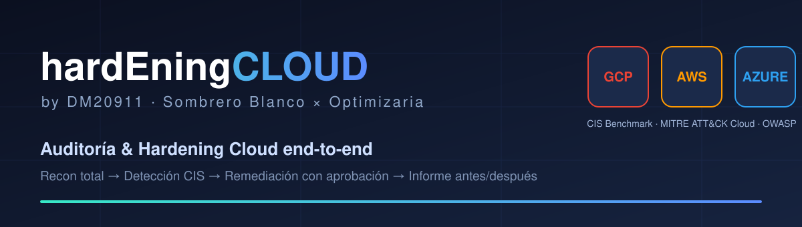
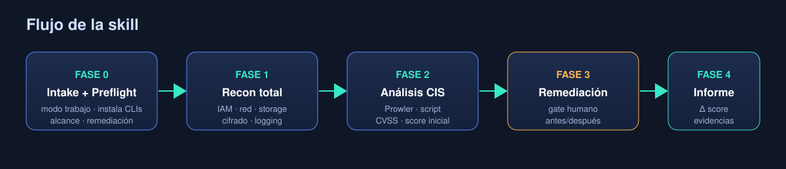
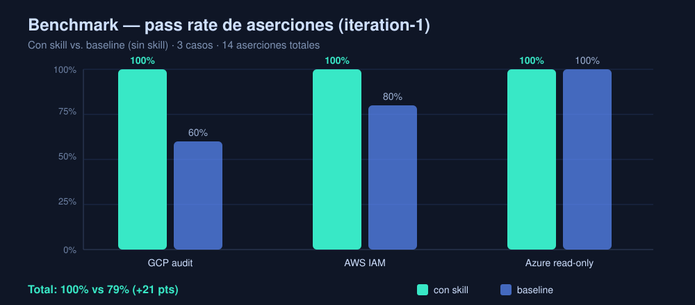

Una skill multi-runtime (Claude · Gemini · LLM local) que descubre, detecta, corrige y documenta la postura de seguridad de un proyecto cloud completo — con aprobación humana en cada cambio.
La mayoría de los escáneres de seguridad cloud listan hallazgos y se detienen. El equipo recibe un PDF con cientos de líneas y nadie cierra el ciclo. hardEningCLOUD_byDM20911 está diseñada alrededor de una sola idea: dejar la nube medible y verificablemente más segura que como estaba, con evidencia de antes y después.
Reconocimiento total de identidades, red, almacenamiento, cómputo, cifrado y logging en la cuenta/proyecto/suscripción.
Clasifica contra CIS Benchmark, con CVSS 3.1 y mapeo a MITRE ATT&CK Cloud y OWASP. Combos de escalada IAM incluidos.
Remediación con aprobación humana previa. Lectura libre; toda escritura se propone, se explica el impacto y se aplica tras un "sí".
Informe con score de postura antes/después y un archivo de evidencias con cada comando y su output.

Evaluación con subagentes independientes: con skill vs baseline (sin skill). Mismos prompts, mismas aserciones objetivas, 3 casos reales, 14 aserciones.

| Caso | Con skill | Baseline | Δ |
|---|---|---|---|
| Auditar GCP y remediar | 5/5 | 3/5 | +40 pts |
| Revisar política IAM AWS (JSON) | 5/5 | 4/5 | +20 pts |
| Endurecer Azure (solo lectura) | 4/4 | 4/4 | 0 |
| Total | 14/14 (100%) | 11/14 (79%) | +21 pts |
Lectura: la ventaja proviene de la disciplina de proceso — pedir el modo de trabajo, preflight de CLIs y plan CIS estructurado — más el uso correcto del analizador de IAM. El caso Azure no discrimina (ambos respetan "no toques nada") y se conserva como control de regresión.
| Dominio | AWS | GCP | Azure |
|---|---|---|---|
| Identidad / IAM | users, roles, MFA, keys, escaladas | bindings, SA keys, allUsers | Entra ID, RBAC, PIM, MFA/CA |
| Almacenamiento | S3 ACL/policy/encryption | GCS IAM, uniform access | Storage blob/HTTPS/SAS |
| Red | SG, NACL, puertos | Firewall, Flow Logs | NSG, IPs, Bastion |
| Cifrado | EBS/RDS/S3, KMS | CMEK, default | Key Vault, TLS |
| Logging | CloudTrail, GuardDuty | Audit Logs, SCC | Diagnostic, Defender |
claude/SKILL.md — skill nativa con
progressive disclosure y subagentes.
gemini/GEMINI.md — mismo flujo, tools
nativas de Gemini.
local-ai/AGENTS.md — compatible con el
estándar AGENTS.md.
local-ai/ollama-system-prompt.md — Ollama /
LM Studio, modo copy-paste por defecto.
Asume autorización explícita sobre los objetivos. Toda escritura sobre la nube requiere aprobación humana por diseño. Reglas anti-lockout antes de tocar IAM o firewall de gestión.